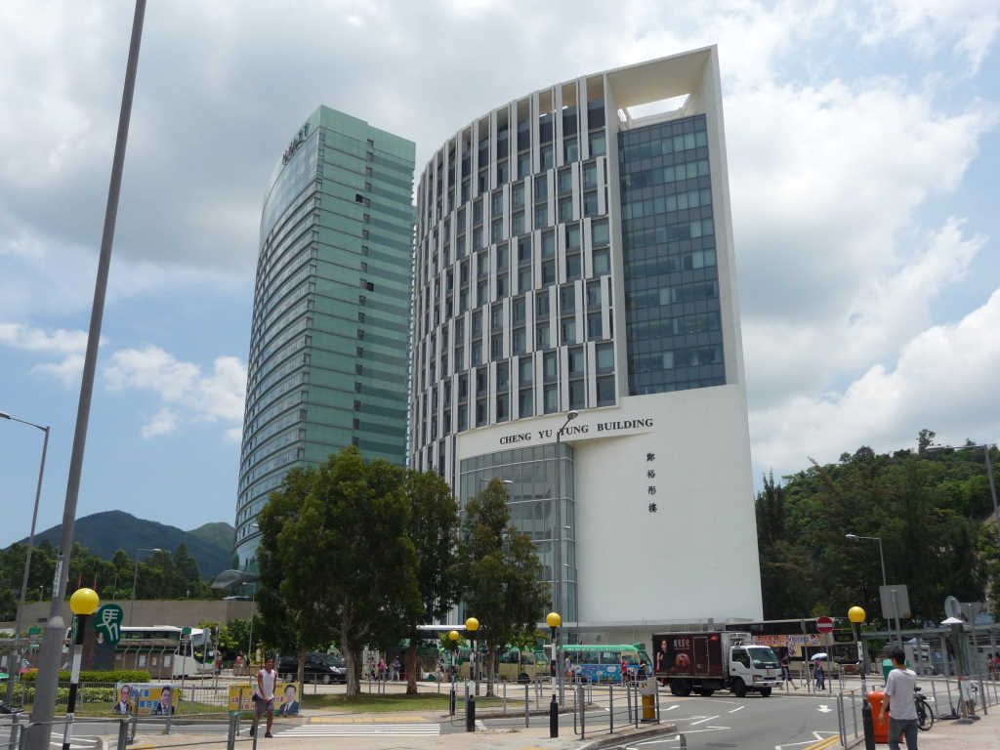

Conference Venue
Cheng Yu Tung Building, Chinese University of Hong Kong, Shatin
The Cheng Yu Tung Building is next to the Hyatt Regency Hotel Shatin.

You can get there:
By MTR:
Get off at the University Station. CYT Building is just 1-minute walk away from Exit
B.
Driving Directions:
From Kowloon:
Take Tolo Highway (Route 9) North, exit at "Exit 4" towards Ma On Shan/ Ma Liu Shui/
University
Station, and take the 1st exit to Chak Cheung Street at the roundabout.
From Tai Po:
Take Tolo Highway (Route 9) South, exit at "Exit 4" towards Science Park/ Ma Liu
Shui/
University Station, and take the 1st exit to Chak Cheung Street at the roundabout.
Get there
Google
map
Driving Directions:
From Kowloon:
Take Tolo Highway (Route 9) North, exit at "Exit 4" towards Ma On Shan/ Ma Liu Shui/ University Station, and take the 1st exit to Chak Cheung Street at the roundabout.From Tai Po:
Take Tolo Highway (Route 9) South, exit at "Exit 4" towards Science Park/ Ma Liu Shui/ University Station, and take the 1st exit to Chak Cheung Street at the roundabout.Get there
Google map
Transportation
- Transportation network: highly developed and efficient
- 90% daily travels rely on public transport
- Payment, very convenient: Octopus card (widely accepted)
- Mass Transit Railway (MTR), cover152 stations, 3.4 million people a day
- Bus (double-decker bus) and mini bus (or public light bus): pass more than 402 routes
- Ferry: cross-harbor (Hong Kong Island-Kowloon), Hong Kong-Macau
Get to Hong Kong:
By Air:
(From Beijing, ~3.5 hr)
(From Shanghai, ~2 hr)
By Train
(From Lo wu, Shenzhen, ~1 hr; From Lo Mak Chau, Shenzhen, ~1hr)
(From South Station, Guangzhou, ~2 hr)
By Car/Bus
(Express highway well connected with Shenzhen, ~45 min to 1 hr)